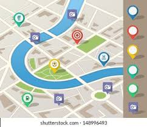

Find Restaurants Near You
For when you’re on the move: sort by distance and see what’s open right now. Instantly spot what’s within walking distance, a quick bike ride, or a short tram hop.
Each result shows name, rating, price range, and open/closed status—no need to open every listing.
The goal is speed: pick the nearest good spot and go. Less scrolling, more eating.
Map & quick picks
